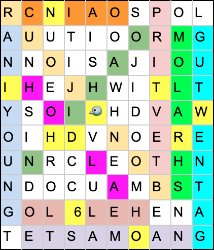

There are four subpuzzles in this puzzle, corresponding to L, LO, LOL, and LOLO respectively. This was intended to be clued by the images on each tab, which progressively add a quarter of the complete image left to right. The main conceit of this puzzle is that each subpuzzle contains information about its adjacent subpuzzles.
The final clue phrase, when you combine the solutions to each subpuzzle, is GADGETMAN PARTNER. This admittedly obscure clue phrase solves to GIMMICK KID.
| Clue | Answer | First letter of extra word |
|---|---|---|
| Spanish ghost word for "the" | EL | G |
| A Riemannian space or line you fill in on a document | BLANK | R |
| Linear extra-dimensional momentum's rotational analogue | ANGULAR MOMENTUM | E |
| Underdog, Eeyore, and Dumbo can do this | FLY | E |
| The Tarot sign symbolized by one horizontal line on another | EQUALS | T |
| In identity economics, it may be "deadweight" | LOSS | I |
| How Norse people may refer to an inhabitant of Sappho's home | LESBIAN | N |
| The glutamic amino acid with a namesake zipper motif | LEUCINE | G |
| A spooky thing we may live by, per George Lakoff | METAPHOR | S |
| "Ego", "hoop", and "age" may follow this word to make new words | FOR | H |
| Xanthippe Olivier husband | SOCRATES | O |
| A lettuce size that's not quite extra | LARGE | L |
| Departed, drunk, or remaining | LEFT | D |
| The anomalously average distance travelled by a moving particle between collisions | MEAN FREE PATH | A |
| Liquid nitrogen measure in the UK | LITRE | N |
| In Etta E.L. James' titles, a recurring number | FIFTY | E |
| A Xhosa term that can mean "fashionable" or "at home" | IN | X |
| A time quantity you can measure with a Henry | INDUCTANCE | T |
| It's royally the duration of something | LENGTH | R |
| An Anabaptist essayist wrote one for Raymond Sebond | APOLOGY | A |
You can find "greetings" in various languages in the word search. Each greeting has an extra letter inserted, as hinted in the L subpuzzle.

The leftover letters in the word search spell out the answer phrase to this puzzle: SOLUTION IS JEWISH DIVORCE DOCUMENT, which solves to GET.
If you order the greetings by the language of the countries seen in the LOL subpuzzle and take the extra letter, you get a clue phrase for how to extract from LOL.
| Language | Greeting | Extra Letter |
|---|---|---|
| English | HELLO | 6 |
| Russian | PRIVET | T |
| Chinese | NIHAO | H |
| German | GUTENTAG | W |
| Hindi | NAMASTE | O |
| Hebrew | SHALOM | R |
| Spanish | HOLA | D |
| Korean | ANYOUNG | I |
| Italian | CIAO | N |
| French | BONJOUR | Twitter symbol |
As per the clue phrase in LO, taking out the 6th word of each Tweet gives the answer phrase: ACCORDING TO DRACULA IT'S A MISERABLE PILE OF SECRETS. For those unfamiliar with Symphony of the Night (or Malraux's Anti-Memoir), this solves to MAN.
| Tweet | Pun Solution | Punny Word | 6th Word | Language |
|---|---|---|---|---|
| I've got a good joke (according to me)! What do you call a 1975 film (set 25 years later) about a deadly game of drawing outlines? | DEATH TRACE 2000 | TRACE | according | English |
| Dang. I have simply got to stop with these jokes. What do you call the Steve Carell movie where the number that ate nine becomes god? | SEVEN ALMIGHTY | SEVEN | to | Russian |
| New joke! Godzilla, King Kong, Dracula, and Frankenstein's creation all decide to join He-Man's team. What is this team called? | MONSTERS OF THE UNIVERSE | MONSTERS | dracula | Chinese |
| Hey look at the time! It's joke o'clock! Computer science nerds: What kind of error gets thrown when you have a reference that points to a cranium instead of a valid object? | SKULL POINTER EXCEPTION | SKULL | it's | German |
| It's about time I make a new joke! What do you call a classic game where you can choose between a sheet, a cutter, and a movie boxer? | ROCKY PAPER SCISSORS | ROCKY | a | Hindi |
| How about I improve your miserable life with a joke? What Arthur Miller play is about the children of Gustav Mahler's wife? | ALMA SONS | ALMA | miserable | Hebrew |
| Okay, I've got a nice little joke for you. What legendary king of Mali was able to turn people to stone? | MANSA MEDUSA | MEDUSA | little | Spanish |
| Here's another joke from the pile: What antiquated monetary system (abandoned at Bretton Woods) was based on the pirate king D. Roger? | GOL STANDARD | GOL | pile | Korean |
| By now, you're probably sick of my jokes. Nah! What do you call an undercover spy sent to observe a paralympic athlete named Blake? | LEEPER AGENT | LEEPER | of | Italian |
| I know. What are my secrets? So many great jokes! Here's one: what's Billy Ray Cyrus's song about a lovesick serpent? | SNAKEY BREAKY HEART | SNAKEY | secrets | French |
The punny words in each Tweet give an instruction for how to extract from LOLO, namely to trace out seven monsters, followed by a list of seven monsters.
Each level can solve to a word using the correct extraction method.
Level 1: Keyboard
Solution: IGNORE
Level 2: Pigpen
Solution: ANSWERS
Level 3: Binary
Solution: SYMBOLIZED
Level 4: Periodic Table
Solution: WITH
Level 5: Tap Code
Solution: THE
Level 6: Trace Out Letters
Solution: THEMATIC
Level 7: RNA/Amino Acids (Extract the highlighted letter from each monster name to get the RNA base they represent.)
(medUsa, Gol, roCky, Alma respectively.)
Solution: LETTER
Together, this forms the intermediate phrase IGNORE ANSWERS SYMBOLIZED WITH THE THEMATIC LETTER, which is a clue for how to extract the subpuzzle L.
Tracing out the monsters from the clue phrase in LOL yields the solution for this subpuzzle, PARTNER.
Firstly, I'd like to thank Chris (Cold) for designing the Adventures of Lolo 3 level editor engine that I used to construct the maps in the LOLO subpuzzle. It was immensely helpful. Also, the structure of this puzzle was slightly inspired by a round in the Mezzacotta/CISRA hunts that used a very similar gimmick where puzzles fed into each other. There have been other great hunts that used a similar mechanic, but I first found this sort of thing in Mezzacotta, so shout-out to those authors as well.
This puzzle was originally constructed to have all subpuzzles feed into each other and it was much more complicated. There was simply too much going on in the initial draft, and it was very difficult to come up with a design scheme where every interaction was useful and not superfluous. I eventually settled for a model in which each subpuzzle fed into its adjacent partners. Because our hunt was designed to be easier, I worked to make sure that each subpuzzle's mechanisms were fairly straightforward (but hopefully still fun).
Sometime between the hunt launch and the playtests, we discovered that Google changed their indexing around GADGETMAN PARTNER a bit, so it was harder than usual to come up with the final answer. It used to be that GIMMICK KID was the first result if you searched for that phrase without quotes. As a result, we made the response for the GADGETMANPARTNER give explicit instructions on finding the answer. Of course, this answer had a lot of submissions related to Inspector Gadget and the Richard Ayoade show. Apologies to anyone frustrated with the last step! It seems the vast majority of teams managed to get there eventually, though.